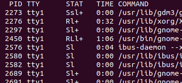
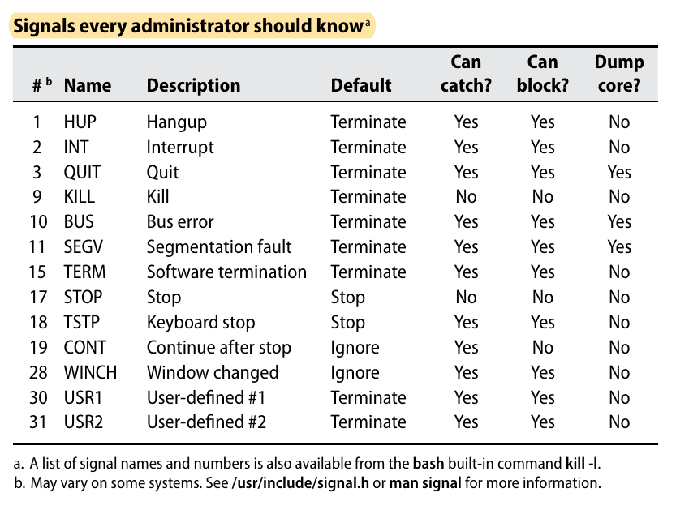
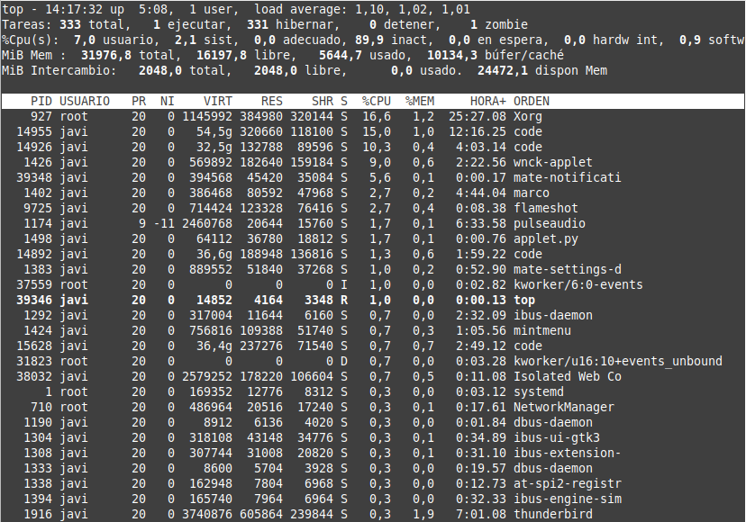
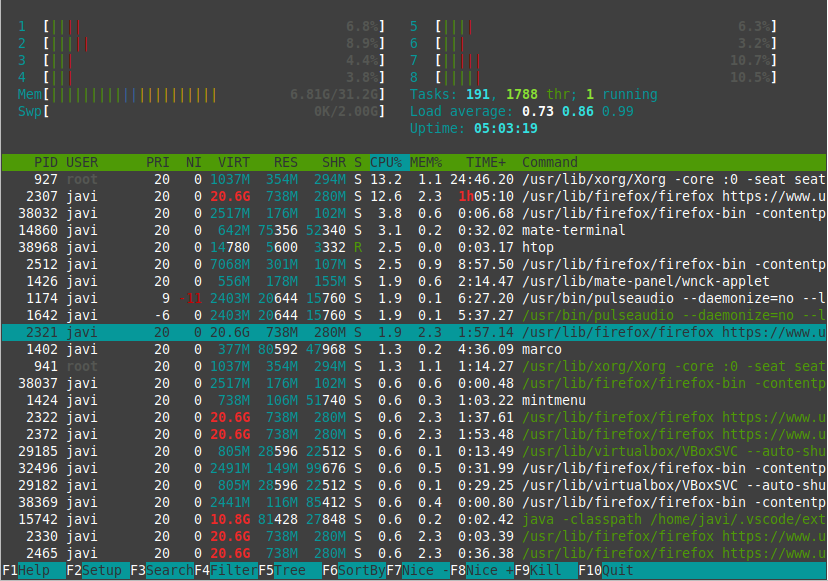

Tema 5: Gestión de recursos del sistema
Programación y Administración de Sistemas
(2023-2024)
1 Objetivos y evaluación
Objetivos
Conocer cuáles son los recursos básicos del sistema operativo (CPU, memoria y espacio en disco) y la necesidad e importancia de su monitorización y gestión.
Definir los procesos en GNU/Linux y distinguir los modos de ejecución básicos (modo usuario y modo núcleo).
Establecer los tipos de procesos que pueden ejecutarse en el sistema operativo.
Utilizar la herramienta
pspara ver los procesos en ejecución y sus atributos.Explicar el ciclo de vida de un proceso en GNU/Linux desde el punto de vista de su administración, detallando los distintos estados por los que puede pasar.
Conocer el mecanismo de planificación utilizado en GNU/Linux para ejecutar los procesos.
Utilizar el número nice para modificar la prioridad de los procesos.
Enviar señales a procesos para controlar su ejecución y distinguir entre el efecto de las distintas señales.
Monitorizar el tiempo de actividad de un sistema mediante la herramienta
uptime.Monitorizar el árbol de ejecución de procesos de un sistema mediante la herramienta
pstree.Monitorizar los procesos en ejecución de forma interactiva mediante la herramienta
top.Obtener informes sobre la ejecución de procesos en un sistema mediante la herramienta
vmstat.Conocer el contenido de la carpeta
/procy los ficheros que en ella aparecen para cada uno de los procesos en ejecución.Postergar la ejecución de procesos mediante el uso de la herramienta
at.Planificar la ejecución periódica de procesos mediante la herramienta
cron.Rastrear señales y llamadas al sistema de un determinado proceso mediante la herramienta
strace.Monitorizar la cantidad de memoria libre mediante la herramienta
free.Monitorizar el uso de memoria mediante
vmstat.Decidir el espacio de paginación necesario para un sistema operativo.
Controlar el espacio en disco mediante las herramientas
dfydu.Monitorizar el rendimiento de los discos mediante el uso de la herramienta
iostat.
Evaluación
Cuestionarios objetivos.
Pruebas de respuesta libre.
Tareas de administración.
2 Introducción
Tareas típicas
Empieza a ir lento un servicio, ¿qué puede pasar?
. . .
¿Cuántos recursos gasta nuestro servidor web según aumentan las peticiones?
. . .
¿cómo programo una tarea para que se ejecute repetidamente?
Introducción
Una correcta administración del sistema implica obtener información sobre sus recursos y rendimiento:
Procesos en ejecución,
cantidad de memoria disponible,
espacio en disco,
nº de particiones,
prioridad de procesos, etc.
para poder identificar y mitigar cuellos de botella, ataques, incidencias, etc.
3 Actividad de la CPU
Procesos en GNU/Linux

Fuente Nemeth et. al 2018
Procesos en GNU/Linux
Proceso: representa un programa en ejecución (el SO crea el proceso cuando comienza la ejecución y lo elimina al finalizarla). Es una abstracción a través de la cuál la memoria, tiempo de procesador y recursos E/S pueden gestionarse y monitorizarse.
Un sistema de tiempo compartido como GNU/Linux permite múltiples usuarios que ejecuten múltiples procesos, aunque la CPU solo puede ejecutar un proceso a la vez por núcleo.
La CPU conmuta rápidamente de un proceso al siguiente, ejecutando un cuanto (por ejemplo, 100ms) de cada proceso.
El SO es el encargado de decidir qué proceso se ejecuta en qué lugar \(\rightarrow\) planificación de la CPU.
Información de CPU y núcleos: PC
En un PC:
$ lscpu | grep -E '^Hilo|^Núcleo|^socket|^CPU\('
CPU(s): 8
Hilo(s) de procesamiento por núcleo: 2
Núcleo(s) por «socket»: 4
CPU(s) del nodo NUMA 0: 0-7
$ grep -m 1 'cpu cores' /proc/cpuinfo
cpu cores : 4
$ nproc --all
8Información de CPU y núcleos: servidor
En un servidor:
$ grep -m 1 'cpu cores' /proc/cpuinfo
cpu cores : 20
$ nproc --all
160
$ lscpu | grep -E '^Hilo|^Núcleo|^socket|^CPU\('
CPU(s): 160
Hilo(s) de procesamiento por núcleo: 2
Núcleo(s) por «socket»: 20
CPU(s) del nodo NUMA 0: 0-19,80-99
CPU(s) del nodo NUMA 1: 20-39,100-119
CPU(s) del nodo NUMA 2: 40-59,120-139
CPU(s) del nodo NUMA 3: 60-79,140-159Procesos: modos de ejecución
Modos de ejecución (distinción para proteger mejor las direcciones de memoria a las que puede acceder un proceso)
Modo usuario: se ejecuta código normal del programa.
Modo núcleo: se ejecutan las funciones del núcleo (en realidad, es el kernel ejecutándose en nombre del proceso):
Llamadas al sistema: Los procesos de usuario solicitan servicios explícitamente a través de la interfaz de llamadas al sistema (p.ej. crear un hilo, abrir un fichero…).
Excepciones: Situaciones excepcionales (división por cero, errores de direccionamiento…) causan excepciones hardware que requieren intervención del kernel.
Interrupciones: Los dispositivos periféricos interrumpen para notificar al kernel de diversos sucesos (terminación de E/S, cambio de estado…).
Procesos: tipos de procesos (I/II)
Procesos de usuario
Procesos creados por un usuario real.
Se ejecutan en modo usuario, excepto en los casos anteriores.
Procesos demonio
No asociados a un usuario, o asociados a uno ficticio.
Se ejecutan en modo usuario, excepto en los casos anteriores.
Realizan tareas periódicas relacionadas con la administración del sistema (gestión de la red,
crontab…).
Procesos: tipos de procesos (II/II)
Procesos núcleo
No asociados a un usuario.
Corresponden al código del kernel.
Se ejecutan siempre en modo núcleo.
Tareas de administración más delicadas (planificación, intercambio de procesos, intercambio de páginas…).
Procesos: monitorizar con ps
ps: información sobre los procesos en ejecución
USER\(\Rightarrow\) usuario que lanzó el programa.PID\(\Rightarrow\) identificador del proceso.PPID\(\Rightarrow\) identificador del proceso padre (los nuevos procesos se crean clonándose confork).%CPU\(\Rightarrow\) porcentaje de la CPU consumido por este proceso (en ese momento).%MEM\(\Rightarrow\) fracción de memoria consumida (es una estimación).VSZ\(\Rightarrow\) tamaño virtual (código+datos+pila) en KB.RSS\(\Rightarrow\) memoria real usada en KB (VSZincluye aRSS).TTY\(\Rightarrow\) terminal asociado con el proceso.
Procesos: monitorizar con ps
ps: información sobre los procesos en ejecución
STATestado del proceso:R: en ejecuciónS: durmiendoZ: proceso zombieD: durmiendo ininterrumpible (E/S)T: parado (señal otrace)

STATbanderas adicionales:<:prioridad más alta de lo normal (\(<0\)),N: más baja de lo normal (\(>0\))l: tiene multithread,+: proceso, foreground,s: líder de sesiónL: tiene páginas bloqueadas en memoria
Procesos: estados de los procesos
R: un proceso en ejecución está listo para ejecutarse en cuanto la CPU esté libre. Tiene todos los recursos que necesita y está esperando su cuanto para ejecutarse.S: durmiendo, esperando a que ocurra un evento específico (petición I/O, lectura de un socket…).bashy los demonios del sistema pasan casi todo su tiempo durmiendo, esperando la entrada por terminal o que un cliente haga una petición por la red. Estos procesos no recibirán tiempo de CPU hasta que el evento ocurra o que se reciba una señal específica.
Procesos: estados de los procesos
D: durmiendo, espera ininterrumpible. Algunas operaciones causan este estado, en el que el proceso no maneja señales, solo despertará cuando pase el evento. Normalmente, el estadoDes transitorio y no llegaríamos a verlo en elps. Sin embargo, determinadas situaciones anómalas hacen que el estado se mantenga (p.ej. pedir un fichero a un servidor NFS al que no podemos acceder y que hemos montado conhard). Solo podemos reiniciar o arreglar el problema.
Procesos: estados de los procesos
Z: zombie, el proceso termina correctamente pero el padre no recoge su código de error \(\rightarrow\) Consultar el PPID para ver el origen del problema.T: proceso detenido temporalmente mediante señales (Ctrl+Z) o porque está siendo examinado (trace). Solo volverán a ejecutarse tras otra señal.
Procesos: estados de los procesos
I: idle, este estado se introdujo en 2017 con la versión 4.17 del núcleo. Significa que estamos ante un proceso ocioso de un hilo del núcleo, en espera ininterrumpible. A diferencia del estadoD, solo se aplica a procesos del núcleo y no contribuye a la carga de la CPU.
Procesos: estados de los procesos
s: líder de sesión. Los procesos se pueden agrupar. Si se manda una señal al grupo, se le manda a todos los procesos. El líder es el que interactúa con la terminal.l: hilos creados conCLONE_THREAD(p.ej. hilos Native Posix Thread Library, NPTL).L: el proceso ha pedido al kernel bloquear determinadas páginas de memoria, para evitar que no se modifiquen mientras se hacen determinadas operaciones.+: foreground, proceso de primer plano, iniciado sin&.
Ejemplo salida ps
$ ps aux | less #a-> Todos usuarios, x-> Procesos sin terminal, u -> Añadir nombre de usuario
USER PID %CPU %MEM VSZ RSS TTY STAT START TIME COMMAND
root 1 0.0 0.0 166852 11240 ? Ss 11:50 0:02 /sbin/init
root 2 0.0 0.0 0 0 ? S 11:50 0:00 [kthreadd]
root 3 0.0 0.0 0 0 ? I< 11:50 0:00 [rcu_gp]
root 4 0.0 0.0 0 0 ? I< 11:50 0:00 [rcu_par_gp]
root 12 0.0 0.0 0 0 ? S 11:50 0:00 [ksoftirqd/0]
root 13 0.0 0.0 0 0 ? I 11:50 0:30 [rcu_sched]
...
pedroa 18651 0.0 0.0 14096 3400 pts/1 R+ 20:36 0:00 ps aux
pedroa 18652 0.0 0.0 8140 912 pts/1 S+ 20:36 0:00 less$ ps al #a-> Todos usuarios, l -> Formato "long"
F UID PID PPID PRI NI VSZ RSS WCHAN STAT TTY TIME COMMAND
4 0 1323 1315 20 0 633340 217800 - Ssl+ tty7 31:12 /usr/lib/xorg/Xorg :0 -seat seat0 -auth /var/run/lightdm/root/:0 -nolisten tcp vt7 -novtswitch
4 0 1324 1 20 0 8340 1760 - Ss+ tty1 0:00 /sbin/agetty -o -p -- \u --noclear tty1 linux
0 1000 18303 18292 20 0 10644 4860 core_s Ss+ pts/0 0:00 bash
0 1000 18649 18292 20 0 10644 4912 - Ss pts/1 0:00 bash
4 1000 18718 18649 20 0 13816 1308 - R+ pts/1 0:00 ps alÁrbol de procesos: pstree
pstree \(\Rightarrow\) visualiza un árbol de los procesos en ejecución
systemd─┬─ModemManager───2*[{ModemManager}]
├─NetworkManager───2*[{NetworkManager}]
├─accounts-daemon───2*[{accounts-daemon}]
├─acpid
├─agetty
├─atop
├─atopacctd
...
├─systemd─┬─(sd-pam)
│ ├─at-spi-bus-laun─┬─dbus-daemon
│ │ └─3*[{at-spi-bus-laun}]
│ ├─at-spi2-registr───2*[{at-spi2-registr}]
│ ├─chrome_crashpad───2*[{chrome_crashpad}]
│ ├─code─┬─code───code───19*[{code}]
│ │ ├─code───code───code───15*[{code}]
│ │ ├─code───7*[{code}]
│ │ ├─code─┬─bash───quarto───deno─┬─xdg-open
│ │ │ │ └─7*[{deno}]
│ │ │ ├─2*[bash]Prioridad
Número nice (“buena gente”) y prioridad de procesos:
Planificación de procesos por prioridades dinámicas.
Al lanzar el proceso, se le asigna un número nice o prioridad estática (se hereda por defecto del proceso padre).
La prioridad por defecto se obtiene mediante el número nice.
Valores bajos (negativos): más prioridad.
Valores altos (positivos): menos prioridad.
Rango de prioridad estática \(\Rightarrow [-20,19]\)
Prioridad y señales: ejemplos nice
Asignación de prioridades mayores o menores que la actual:
nice -5 nautilus: lanzarnautiluscon nº nice incrementado en 5.nice --10 nautilus: lanzarnautiluscon nº nice decrementado en 10 (solo root).renice 14 890: prioridad 14 al proceso 890.renice 5 -u pedroa: prioridad 5 para todos los procesos del usuariopedroa.
Ejercicio nice
- Lista la información los procesos relacionados con
apache - Busca cómo averiguar la prioridad de estos procesos (hay varias alternativas).
- Lista y cambia la prioridad a algún proceso.
Ejercicio nice (solución)
Información con ps:
$ ps axu|grep -E 'apache|COMMAND'
USER PID %CPU %MEM VSZ RSS TTY STAT START TIME COMMAND
root 29822 0.0 0.0 6524 4396 ? Ss 12:45 0:00 /usr/sbin/apache2 -k start
www-data 29823 0.0 0.0 1997844 4320 ? Sl 12:45 0:00 /usr/sbin/apache2 -k start
www-data 29824 0.0 0.0 1932308 4316 ? Sl 12:45 0:00 /usr/sbin/apache2 -k startCon la opción -l:
ps -lu www-dataUna vez sabemos el PID podemos consultar su prioridad:
ps -o pid 29822También con top.
Señales y procesos: kill
Envío de señales a los procesos (pararlos, hacer que continúen, eliminarlos…):
kill -señal pid(donde señal es un número).kill pid: mandar señal por defecto al procesopid(señalSIGTERM, número 15, se puede capturar).SIGKILL(9) fuerza la salida del proceso. No se puede capturar.Parar un proceso
SIGSTOP(19), ReiniciarloSIGCONT(18).killall comando: permite mandar una señal a todos los procesos con un determinado nombre de comando.pkill\(\Rightarrow\) enviar una señal usando el nombre u otros atributos o criterios (uid,gid,terminal…).renice +4 $(pgrep chrome)
Los procesos en estado
DoZno se detienen pese a recibir la señal KILL.
Señales POSIX

Fuente Nemeth et. al 2018.
Señales POSIX
| # | Nombre | Descripción | Por defecto | ¿Se puede capturar? | ¿Se puede bloquear? | ¿core dump? |
| 1 | HUP | Hang up (terminal) | Terminar | Si | Si | No |
| 2 | INT | Interrumpir (Ctrl+C) | Terminar | Si | Si | No |
| 3 | QUIT | Similar a TERM | Terminar | Si | Si | Si |
| 9 | KILL | Matar proceso | Terminar | No | No | No |
| * | BUS | Error manejo bus | Terminar | Si | Si | Si |
| 11 | SEGV | Violación de segmento | Terminar | Si | Si | Si |
| 15 | TERM | Parar software | Terminar | Si | Si | No |
| * | STOP | Parada | Parar | No | No | No |
| * | TSTP | Parada (Ctrl+Z) | Parar | Si | Si | No |
| * | CONT | Continuar (tras STOP) | Continuar | Si | No | No |
| * | WINCH | Cambio tamaño | Continuar | Si | Si | No |
| * | USR1 | A definir | Terminar | Si | Si | No |
| * | USR2 | A definir | Terminar | Si | Si | No |
*: depende del Sistema Operativo.
Señales y procesos
KILL(9): No se puede bloquear ni capturar.INT(2): La que se envía al pulsarCrtl+C.Se puede bloquear.
Si se manda a un intérprete de órdenes, podría cancelar la orden que está ejecutando, pero no el programa completo.
TERM(15): La que se manda al cerrar el proceso padre o al reiniciar. Se puede bloquear y capturar.Diferencia entre
STOPyTSP:STOPno se puede ni bloquear ni capturar.
Señales y procesos
HUP(1):Si se trata de demonios, debería provocar que se reinicien, volviendo a leer su configuración.
Si se trata de procesos iniciados en una terminal, se manda al cerrar la terminal (algunos intérpretes hacen inmunes los procesos background a esta señal, en bash, hay que hacerlo con el comando
nohup).
QUIT(3): Similar aTERMpero hace un core dump.TSTP: La que se envía al pulsarCrtl+Z.Los procesos detenidos con
TSTPo conSTOP, se puede reanudar con:- la señal
CONT, o usando el comandofg(vuelve al foreground) obg(vuelve al background).
- la señal
Monitorizar uso CPU con uptime
uptime: hora actual, cuánto tiempo lleva en marcha el sistema, número de usuarios conectados, y carga media del sistema (el número medio de procesos del sistema que durante los últimos \(1\), \(5\) y \(15\) minutos han estado en los estados R o D).
Valores altos implican que el sistema se está usando mucho, pero ¿cuándo se considera que un valor es alto? \(\rightarrow\) depende del número de núcleos.
Valores bajos no significan que el tiempo de respuesta vaya a ser bajo.
i02samoj@VTS1:~$ uptime
13:54:52 up 7:55, 4 users, load average: 0,00, 0,00, 0,00top
top: proporciona una visión continua de la actividad del procesador, en tiempo real, mostrando las tareas que hacen más uso de la CPU. Además, permite manipular procesos de forma interactiva.
Las cinco líneas primeras muestran información general:
Estadísticas
uptime.Resumen de procesos en el sistema: nº procesos, nº procesos en ejecución, durmiendo, parados o zombies.
Porcentaje de tiempo de CPU gastado en: modo usuario (
us), modo sistema o núcleo (sy), procesos valornicepositivo (ni), tiempo ocioso (id), procesos esperando eventos E/S (wa), tratando interrupciones (hardware o software,hiosi), espera involuntaria en virtualización (st).Estado actual de la memoria física: total disponible, usada, libre, usada en buffers.
Espacio swap: total disponible, usada, libre, usada en buffers, usada en caché de página.
top (ejemplo)
top - 14:06:52 up 4:58, 1 user, load average: 0,73, 1,04, 1,09
Tareas: 338 total, 1 ejecutar, 336 hibernar, 0 detener, 1 zombie
%Cpu(s): 2,4 usuario, 1,2 sist, 0,0 adecuado, 96,0 inact, 0,0 en espera, 0,0 hardw int, 0,4 softw int, 0,0 roba
MiB Mem : 31976,8 total, 16274,0 libre, 5729,4 usado, 9973,5 búfer/caché
MiB Intercambio: 2048,0 total, 2048,0 libre, 0,0 usado. 24470,8 dispon Mem
PID USUARIO PR NI VIRT RES SHR S %CPU %MEM HORA+ ORDEN
927 root 20 0 1059784 340240 279388 S 6,9 1,0 24:22.48 Xorg
14955 javi 20 0 54,5g 300016 117956 S 5,6 0,9 10:38.54 code
14926 javi 20 0 32,5g 129396 87796 S 5,0 0,4 3:36.17 code
14860 javi 20 0 658428 69480 47412 S 3,0 0,2 0:28.59 mate-terminal
1174 javi 9 -11 2460768 20644 15760 S 2,0 0,1 6:21.53 pulseaudio
1402 javi 20 0 386468 80468 47844 S 1,3 0,2 4:31.08 marco
2307 javi 20 0 20,6g 755064 283428 S 1,3 2,3 64:47.79 firefox-bin
38250 javi 20 0 14892 4132 3296 R 1,0 0,0 0:00.15 top
1292 javi 20 0 317004 11644 6160 S 0,7 0,0 2:24.85 ibus-daemon
1916 javi 20 0 3680980 594664 237824 S 0,7 1,8 6:55.73 thunderbird
710 root 20 0 486964 20516 17240 S 0,3 0,1 0:17.27 NetworkManager
1424 javi 20 0 756152 108576 51740 S 0,3 0,3 1:02.19 mintmenu
1569 javi 20 0 5177956 295572 76252 S 0,3 0,9 2:01.15 dropbox
14892 javi 20 0 36,6g 191608 136864 S 0,3 0,6 1:47.41 code
25532 root 20 0 0 0 0 I 0,3 0,0 0:05.80 kworker/u16:4-events_unbound
26234 javi 20 0 2574928 164384 95444 S 0,3 0,5 0:31.49 Isolated Web Co
29156 javi 20 0 1596016 205008 129828 S 0,3 0,6 0:21.91 VirtualBox
29176 javi 20 0 77236 15284 12404 S 0,3 0,0 0:13.22 VBoxXPCOMIPCD
31941 javi 20 0 2821780 302532 114364 S 0,3 0,9 1:02.87 Isolated Web Co top (ejemplo)

top: interacción
Los datos de la parte inferior son similares a los de
ps(excepto [SHR] memoria compartida disponible para ser utilizada).Procesos ordenados decrecientemente por uso de CPU.
Lista actualizada interactivamente, normalmente cada 5s o pulsar intro/espacio.
top: interacción
Tareas sobre los procesos:
Cambiar la prioridad de alguno utilizando la opción “
r”.Matar o enviar una señal con la opción “
k”.Ordenarlos según diferentes criterios (por PID con “
N”, uso de CPU con “P”, tiempo con “T”, por memoria con “M”, etc.).Con “
n” se cambia el número de procesos que se muestran.Para salir se utiliza la letra “
q”.“
u” mostrar un usuario.“
R” cambiar ordenación.“
1” información independiente por cada procesador.
Alternativas a top
top viene con todas las distribuciones de linux, pero hay otras alternativas como htop

Ejercicio top
- Recuerda que puedes ver la ayuda pulsando
h. - Prueba a monitorizar los procesos de un solo usuario.
- Prueba a ordenar por diferentes criterios. Busca el proceso que más memoria consume.
- Busca cómo saber el número de hilos del sistema.
- Instala
htopy prueba de nuevo.
vmstat
**vmstat [options] [delay [count]]: información sobre memoria virtual (y más)
r\(\Rightarrow\) número de procesos esperando su tiempo de ejecución.b\(\Rightarrow\) número de procesos en espera ininterrumpible.us\(\Rightarrow\) tiempo de CPU en modo usuario (modo usuario).sy\(\Rightarrow\) tiempo de CPU en modo sistema (modo núcleo).id\(\Rightarrow\) tiempo de CPU en inactividad.wa\(\Rightarrow\) tiempo de CPU usado en espera de E/S.st\(\Rightarrow\) tiempo de CPU usado en virtualización.
vmstat: ejemplo
Repetir cada 2 segundos 5 veces:
$ vmstat 2 5
procs ----------memory------------ -swap- --io-- -system-- -----cpu------
r b swpd free buff cache si so bi bo in cs us sy id wa st
0 0 0 10368052 221628 3251020 0 0 109 71 142 482 5 1 93 0 0
0 0 0 10367408 221636 3251288 0 0 0 58 1526 7113 4 2 94 0 0
0 0 0 10350648 221636 3269616 0 0 0 0 1165 3711 9 1 90 0 0
1 0 0 10351420 221636 3268904 0 0 0 0 575 1578 6 0 93 0 0
1 0 0 10345792 221636 3274928 0 0 0 26 2497 8090 6 3 91 0 0Más posibilidades en How to Use the vmstat Command
Carpeta /proc
ps y top leen la información que necesitan de /proc.
Cada proceso tiene una carpeta (cuyo nombre es el pid) y en esa carpeta hay información sobre el mismo:
cmdline: línea de comandos con que fue iniciado.cwd: enlace simbólico al directorio actual del proceso.environ: Las variables de entorno en el momento de invocación.exe: enlace simbólico al fichero ejecutado.fd: carpeta con cualquier descriptor de fichero abierto.maps: información de mapeo de memoria.root: enlace simbólico a la raíz del sistema (/).stat: estado del proceso.statm: uso de memoria.
Ejercicio: monitoriza apache
- Instala las utilidades de apache:
sudo apt install apache2-utils- Vamos a usar apache benchmark para probar el rendimiento de nuestro servidor. Nota: Idealmente
abdebe utilizarse desde otra máquina distinta al servidor.
# esto lanza 10000 peticiones con un máximo de 100 concurrentes
ab -n 10000 -c 100 http://localhost/- Abre 3 terminales en tu servidor.
- Inicia
toppara vigilar la CPU. - Lanza
vmstatpara mostrar información periódicamente. - Usa
aby observa qué pasa.
Ejercicio: fork bomb
El siguiente código lanza una subprocesos de forma recursiva :(){ :|:& };:. ATENCIÓN: prueba esto sólo en tu máquina virtual. Explicación en Understanding Bash fork() Bomb.
- Lanza
vmstat 1. - Lanza el ataque:
:(){ :|:& };:- Intenta arreglarlo.
- ¿Cómo podemos protegernos frente a este ataque?
- Mira los parámetros de
/etc/security/limits.conf. - Echa un vistazo a
ulimiten el enlace anterior.
4 Programación y temporizadores
Programar ejecución de procesos con at
at: ejecutar tareas a una determinada hora (no viene instalado por defecto).
Puede recibir un fichero de texto con las órdenes a ejecutar.
Dispone de un prompt para ir introduciendo las órdenes (
Ctrl+Dpara finalizar introduce<EOT>).atd: demonio que ejecuta las órdenes.atq: consulta la lista de órdenes.atrm: eliminar órdenes.
at: ejemplo
$ date
lun 20 mar 2023 14:36:50 CET
$ at 14:40
warning: commands will be executed using /bin/sh
at> echo "Hola Mundo" > /tmp/saludo
at> <EOT>
job 3 at Mon Mar 20 14:40:00 2023
$ atq
3 Mon Mar 20 14:40:00 2023 a javi
$ date ; cat /tmp/saludo
lun 20 mar 2023 14:37:39 CET
cat: /tmp/saludo: No existe el archivo o el directorio
$ date ; cat /tmp/saludo
lun 20 mar 2023 14:40:20 CET
Hola MundoTareas periódicas con cron
cron: ejecutar tareas periódicamente.crond: demonio encargado de ejecutar las órdenes.crontab: establecer las tareas a ejecutar (-e: añadir/modificar tareas,-l: listar tareas,-r: eliminar tareas)./etc/crontab: fichero de configuración del administrador./etc/cron.d: directorio en el que el administrador puede copiar ficheros con formato delcrontabque ejecutarácron.
crontab
Formato de
crontab:minuto hora día_mes mes día_semana [user] comandoSe interpreta como una conjunción de condiciones, salvo para
día_semanaydía_mes(que sería disyunción).Los domingos son el día 0 y 7 de la semana.
# Example of job definition:
# .---------------- minute (0 - 59)
# | .------------- hour (0 - 23)
# | | .---------- day of month (1 - 31)
# | | | .------- month (1 - 12) OR jan,feb,mar,apr ...
# | | | | .---- day of week (0 - 6) (Sunday=0 or 7) OR sun,mon,tue,wed,thu,fri,sat
# | | | | |
# * * * * * user-name command to be executed
17 * * * * root cd / && run-parts --report /etc/cron.hourly
25 6 * * * root test -x /usr/sbin/anacron || ( cd / && run-parts --report /etc/cron.daily )
47 6 * * 7 root test -x /usr/sbin/anacron || ( cd / && run-parts --report /etc/cron.weekly )
52 6 1 * * root test -x /usr/sbin/anacron || ( cd / && run-parts --report /etc/cron.monthly )crontab ejemplo
# Hacer una copia de seguridad del home cada semana
0 5 * * 1 tar -zcf /var/backups/home_$(date +\%Y\%m\%d%S).tgz /home/
# Otras tareas
5 9 * * * $HOME/tareadiaria # 9:05
15 14 1 * * $HOME/tareames # 14:15 el día 1 cada mes
0 22 * * 1-5 $HOME/tareasemanal # 22:0 de lunes a viernes
21 0-23/2 * * * $HOME/tareacada2horas # 0h, 2h, 4h, 6h, y 21m
5 4 * * sun $HOME/tareadomingos # Domingos a las 4:05
0 9 1 * 5 $HOME/otratarea # A las 9:00h el día 1
# de cada mes O los viernesanacron
Si la máquina no está encendida cuando se ha requerido lanzar el proceso \(\Rightarrow\)
cronno lo lanza.Se podría hacer
0 10 */3 * *para conseguir algo parecido (lo intentaría a las 10h cada tres días).anacron: no asume que la máquina está siempre encendida.Combina el uso de scripts al inicio con el uso de cron.
Permite especificar tareas diarias, semanales o mensuales, de forma muy simple.
Introducir aplicaciones o enlaces a las mismas en:
/etc/cron.daily/,/etc/cron.hourly/,/etc/cron.monthly/,/etc/cron.weekly/
cron, anacron y systemd
sudo service anacron statusLos timers de systemd son una alternativa a cron y anacron si bien systemd se encarga de integrarlos por compatibilidad hacia atrás. Puedes ver un ejemplo de timers aquí.
Esto añade más posibilidades, por ejemplo, controlar que anacron se ejecute sólo cuando el portátil está conectado a la corriente (ver /lib/systemd/system/anacron.service.)
Ejercicio: ¿dónde pondrías…?
- Copia de seguridad de un portátil
- Programar el apagado de la máquina a una hora una sola vez
- Copia de seguridad en un servidor
5 Rastreo de procesos
Rastreo de señales y llamadas al sistema
El comando strace nos permite observar qué es lo que está haciendo un proceso.
Muestra cada llamada al sistema que hace y cada señal que recibe.
strace -p pid: rastrear un proceso ya iniciado.strace comando: iniciar un proceso y rastrearlo.strace -o salida.txt comando: utilizar un fichero para guardar la salida.
Cómo proceder con procesos acaparadores:
Como administradores, debemos sospechar cuando un proceso acapara mucha CPU.
Antes de matarlos, deberíamos saber qué están haciendo.
Si el proceso parece legítimo, deberíamos suspenderlo con
STOP, aplicarlerenicey reanudarlo conCONTtras hablar con el dueño del proceso.
Rastreo de señales y llamadas al sistema
¿Algo así qué haría?
ATENCIÓN. No hacer esto fuera de tu máquina virtual controlada
while 1
mkdir adir
cd adir
touch afile
end. . .
No consume mucho espacio, pero bloquea el uso del disco ¿por qué?.
El árbol que se genera es tan grande, que ni si quiera
rm -Res capaz de manejarlo.
6 Memoria
Control/gestión de la actividad de la memoria
Intercambio y paginación \(\Rightarrow\) memoria virtual para alojar procesos.
Debemos gestionar la RAM y la zona de intercambio.
vmstat(todo en KBs salvo con-S):swpd\(\Rightarrow\) Cantidad de memoria virtual (intercambio) ocupada.free\(\Rightarrow\) Cantidad de memoria virtual sin usar.buff\(\Rightarrow\) Cantidad de memoria empleada como buffers para E/S (memoria temporal empleada por algunos dispositivos, p.ej. una tarjeta de red).cache\(\Rightarrow\) La cantidad de memoria empleada como caché de disco.
$ vmstat 2 2
procs ------------memory---------- --swap- --io-- -system-- -----cpu------
r b swpd free buff cache si so bi bo in cs us sy id wa st
0 0 0 10368052 221628 3251020 0 0 109 71 142 482 5 1 93 0 0
0 0 0 10367408 221636 3251288 0 0 0 58 1526 7113 4 2 94 0 0Control/gestión de la actividad de la memoria
vmstatsi\(\Rightarrow\) Cantidad de memoria traída del espacio de intercambio desde disco en KB/s.so\(\Rightarrow\) Cantidad de memoria intercambiada al disco en KB/s.bi\(\Rightarrow\) Bloques recibidos desde un dispositivo de bloques (en bloques/s).bo\(\Rightarrow\) Bloques enviados a un dispositivo de bloques (en bloques/s).in\(\Rightarrow\) Nº de interrupciones por segundo (contando el reloj).cs\(\Rightarrow\) Nº de cambios de contexto por segundo.
$ vmstat 2 2
procs ------------memory---------- --swap- --io-- -system-- -----cpu------
r b swpd free buff cache si so bi bo in cs us sy id wa st
0 0 0 10368052 221628 3251020 0 0 109 71 142 482 5 1 93 0 0
0 0 0 10367408 221636 3251288 0 0 0 58 1526 7113 4 2 94 0 0Memoria de intercambio
Espacio para paginación:
¿Qué tamaño es el adecuado para la paginación?. Depende:
Memoria requerida por los procesos, número de procesos simultáneos, etc…
Demanda del sistema.
En portátiles, para posibilitar la hibernación, al menos tanto espacio como memoria RAM.
Se puede tener una partición de intercambio o un fichero de intercambio, ¿qué opción es la mejor?
Se puede controlar con números de prioridad en
/etc/fstab.
Gestión memoria de intercambio:
Espacio para paginación:
swapon -s: nos da un listado de particiones o ficheros activos.swapon /dev/sda5: activar una determinada partición.swapoff /dev/sda5: desactivar una determinada partición.¿Cómo se crea un fichero de paginación?
# El fichero debe ser contiguo en disco
sudo dd if=/dev/zero of=/.fichero_swap bs=1048576 count=1024
sudo mkswap /.fichero_swap
sudo sync
sudo swapon /.fichero_swapUso de memoria: free
free: obtener información sobre el uso de memoria (mismos campos que top).
$ free
total used free shared buff/cache available
Mem: 16203968 3778368 3046064 570784 9379536 11514988
Swap: 0 0 0Ejercicio: paginación
- Consulta si tienes la swap activada y la memoria con
swapon -syfree - Comprueba si está en uso
- Desactívala
- Activa la swap en un fichero
- Comprueba el resultado con
swapon -syfree - Deja todo como estaba
Ejercicio: memoria en uso
Utiliza el siguiente código para reservar el 90% de la memoria libre del ordenador. Comprueba el efecto que tiene con vmstat y free.
#include <stdio.h>
#include <sys/sysinfo.h>
#include <stdlib.h>
#include <math.h>
void printmemsize(char *str, unsigned long ramsize) {
printf("%s: %ld in bytes / %ld in KB / %ld in MB / %ld in GB\n",
str, ramsize, ramsize/1024, (ramsize/1024)/1024, ((ramsize/1024)/1024)/1024);
}
int main(int argc, char **argv) {
struct sysinfo info;
sysinfo(&info);
printf("uptime: %ld\n", info.uptime);
// print total ram size
printmemsize("totalram", info.totalram);
printmemsize("freeram", info.freeram);
printmemsize("sharedram", info.sharedram);
printmemsize("bufferram", info.bufferram);
printmemsize("freeswap", info.freeswap);
printf("current running processes: %d\n", info.procs);
long *v = NULL;
unsigned long n;
n = info.freeram/sizeof(long);
printf("n: %ld; sizeof(long): %ld\n", n, sizeof(long));
n = ceill(0.9 * n);
printmemsize("allocating 90% of free memory", n);
v = malloc(n * sizeof(long));
if (v == NULL) {
perror("cannot allocate memory\n");
return -1;
}
for (unsigned long i = 0; i<n; i++) {
v[i] = i;
}
getchar();
free(v);
return 0;
}7 Dispositivos Entrada/Salida
Espacio en disco: df
Espacio en disco (particiones):
df: muestra la capacidad, el espacio libre y el punto de montaje de cada sistema de ficheros del equipo.
$ df -h
S.ficheros Tamaño Usados Disp Uso% Montado en
udev 7,7G 0 7,7G 0% /dev
tmpfs 1,6G 1,8M 1,6G 1% /run
/dev/nvme0n1p6 58G 32G 24G 58% /
tmpfs 7,8G 279M 7,5G 4% /dev/shm
tmpfs 5,0M 4,0K 5,0M 1% /run/lock
/dev/nvme0n1p5 314G 131G 167G 45% /home
/dev/loop1 83M 83M 0 100% /snap/scrcpy/274
...Si el sistema de ficheros raíz se quedase sin espacio el sistema tendría problemas. P.ej., no podría arrancar, (¿por qué?).
“
-i” nos permite mostrar información sobre los nodos-i.
$ df -i /dev/nvme0n1p5
S.ficheros Nodos-i NUsados NLibres NUso% Montado en
/dev/nvme0n1p5 20946944 1021112 19925832 5% /homeEspacio en disco: du
Espacio en disco (carpetas):
du: muestra el espacio usado por cada subdirectorio del directorio actual.
/PAS$ du -h --max-depth=1
196K ./Programa2021
176K ./logs
32K ./reservas
79M ./Evaluacion
45M ./MaterialDocente
6,9M ./guiaDocente
1,4M ./listaClase
133MSi no ponemos
--max-depth=1nos muestra todas las carpetas.La última línea es el acumulado.
¡OJO! du cuenta bloques del sistema de ficheros, estén o no completamente ocupados (para un fichero de 1B cuenta 4 KB).
Estadísticas memoria: iostat
Estadísticas de entrada/salida de disco
iostat intervalo numero: presenta estadísticas sobre la CPU y los dispositivos y particiones de E/S.
tps\(\Rightarrow\) nº de transferencias por segundo.kB_read/s\(\Rightarrow\) nº de kBs leídos por segundo.kB_wrtn/s\(\Rightarrow\) nº de kBs escritos por segundo.kB_read\(\Rightarrow\) nº total de kBs leídos.kB_wrtn\(\Rightarrow\) nº total de kBs escritos.
$ iostat
Linux 5.4.0-144-generic 20/03/23 _x86_64_ (8 CPU)
avg-cpu: %user %nice %system %iowait %steal %idle
7,41 0,79 2,62 0,91 0,00 88,28
Device tps kB_read/s kB_wrtn/s kB_read kB_wrtn
loop0 0,11 0,91 0,00 1158 0
...
nvme0n1 218,69 3299,26 2384,25 4185145 3024449
loop8 0,09 0,89 0,00 1131 0
loop9 0,13 0,93 0,00 1181 0
...
dm-0 208,57 1415,84 427,96 1796005 542868Procesos y acceso a disco: iotop
Is your Linux server too slow or load is too high? One of the possible causes of such symptoms may be high IO (input/output) waiting time, which basically means that some of your processes need to read or write to a hard drive while it is too slow and not ready yet, serving data for some other processes.
Common practice is to use iostat -x in order to find out which block device (hard drive) is slow, but this information is not always helpful. It could help you much more if you knew which process reads or writes the most data from your slow disk, so you could renice it using ionice or even kill it.
iotop identifies processes that use high amount of input/output requests on your machine. It is similar to the well known top utility, but instead of showing you what consumes CPU the most, it lists processes by their IO usage. Inspired by iotop Python script from Guillaume Chazarain, rewritten in C by Vyacheslav Trushkin and improved by Boian Bonev so it runs without Python at all.
8 Referencias
Referencias
Evi Nemeth, Garth Snyder, Trent R. Hein, Ben Whaley y Dan Mackin. Unix and Linux system administration handbook. Capítulo 4. Process Control, Capítulo 10. Logging. Addison-Wesley. 5th Edition. 2018.
Aeleen Frisch. Essential system administration. Capítulo 15. Managing system resources. O’Reilly and Associates. Tercera edición. 2002.